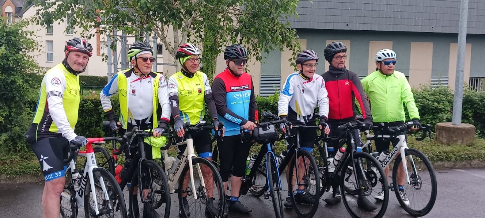

Séjour itinérant Bruz-Bruz vers la Normandie
Sous l’impulsion de Gérard Prod’Homme, enfant du pays et organisateur du séjour, neuf membres de la Bicyclette Bruzoise ont pris la direction de la Normandie pour quatre jours de vélo, de découverte et de convivialité.
Au programme : près de 600 km, plus de 6 000 m de dénivelé positif, des paysages remarquables et une météo exceptionnelle.
Le 7 mai, le groupe a quitté Bruz pour rejoindre Juvigny-les-Vallées après 143 km. Le lendemain, une boucle de 143 km et 2 300 m de dénivelé a permis de traverser la Suisse Normande, autour de Pont-d’Ouilly, Clécy et la vallée de l’Orne.
Cette étape exigeante a été marquée par 27 montées, dont un passage à 27 %, mais aussi par la lourde chute du président Mickaël, à qui l’ensemble du club souhaite un prompt rétablissement.
Le 9 mai, les participants ont découvert le Pays d’Auge, le Haras national du Pin et le Mont-Ormel, avant un retour vers Bruz le 10 mai. Le séjour restera comme une réussite sportive et humaine, portée par l’organisation, la logistique et la restauration assurées par Gérard.
